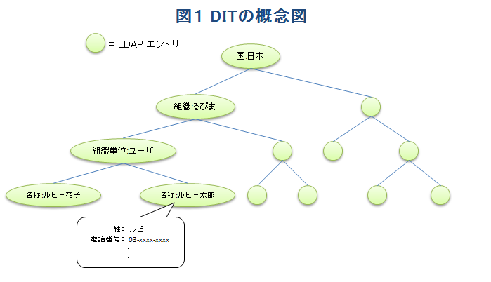
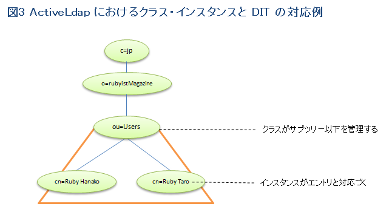
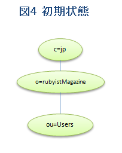

ActiveLdap を使ってみよう（前編）
著者：高瀬一彰
編集：うえだ
はじめに
ActiveLdap は LDAP を検索・操作するためのライブラリです。ActiveRecord に着想を得たこのライブラリは、LDAP を扱う上で直感的かつシンプルなオブジェクト指向インターフェースを提供します。
これまでの LDAP ライブラリと比較すると、ActiveLdap はシンプルかつ判りやすい LDAP プログラミングを可能とします。Rubyist な皆さんなら、以下のサンプルコードを直感的に理解していただけるのではないでしょうか。
# エントリの作成
user = User.new
# 属性の設定
user.cn = "Ruby Taro"
# 保存
user.save
# 削除
user.destroy
ActiveLdap を利用する際、当然ながら LDAP の知識が要求されます。このため、本記事では先ず LDAP の基礎概念について記述しています。また LDAP をご存知の方も、記事の中に見慣れない単語など出てくるかもしれません。必要な説明はなるべく記述しましたので、必要に応じ参照して頂ければと思います。
この記事では、LDAP の基礎概念からActiveLdap のインストール方法・基礎的な利用法までを紹介します。なお既に ActiveLdap を利用しているユーザの方やこの記事に記載の内容を習得した方向けに、後編としてより応用的な記事を るびま の次号に掲載する予定です。
対象読者
既に Ruby をある程度習得している方で、以下のいずれかに該当する方
- Ruby を用いて LDAP プログラミングをしようと考えている方
- ActiveLdap をこれから利用したい方や、ActiveLdap に興味のある方
検証環境
この記事で記載のコマンド例などは以下の環境で確認しています。皆さんの環境では適宜読み替えてください。
- OS: CentOS 5
- LDAP: openldap 2.3.43
- ActiveLdap: gem 版 (version 1.1.0)
目次
- はじめに
- 対象読者
- 検証環境
- 目次
- LDAP とは
- ActiveLdap とは
- 次回の予定
- 著者について
LDAP とは
先ずはじめに LDAP の基礎概念を記述します。本記事では概要にとどめますので、既に LDAP をご存知の方は ActiveLdap とは に進んで頂ければと思います。
LDAP とは Lightweight Directory Access Protocol の略で、日本語に翻訳すると” 軽量ディレクトリアクセスプロトコル”です。LDAP という言葉は L/DAP と分解できますが、L が示す Lightweight は LL (Lightweight Language) のそれとほぼ同義で軽量な DAP ということです。では DAP とは何か − これは文字通り『ディレクトリ・サービスにアクセスするためのプロトコル』ということです。
ディレクトリ・サービスは一種のデータベースサービスですが、その概要について Wikipedia のページ から引用してみましょう。
ディレクトリ・サービスは、LANなどのコンピュータネットワーク上にあるユーザ 情報、接続されているプリンターなどの資源を記憶し、検索しやすいようにまとめた ものである。ネットワークを一元管理するための情報を保存し、利用するために、 企業等の比較的規模の大きいコンピュータネットワークで利用されることが多い。 (中略) 代表的なディレクトリ・サービスとしてはDNSやオープンソースのOpenLDAP、 サン・マイクロシステムズにより開発されたNIS、ノベルのNDS、アップルのMac OS X Serverに標準搭載されているOpen Directory、マイクロソフトのWindows 2000以降の サーバ製品に標準搭載されているActive Directoryなどがある。
元々 DAP は ITU-T が策定した X.500 シリーズという規格の中で定義されたプロトコルの一つですが、処理が複雑で重いために LDAP が開発され、現在では電子メールのアドレス帳や各種サーバのアカウント管理など、TCP/IP ネットワーク環境で広く利用されるようになっています。
LDAP の使われどころ
普段、我々があまり意識せずに使っている__ディレクトリ__という言葉ですが、英語の辞書を参照してみると”名前や事実のリスト・または書籍”という記述が見られ、つまるところ名簿や台帳の事を指すようです。先ほどの Wikipedia の記述と合わせて考えると”ディレクトリ・サービス”はネットワーク上に存在する資源を探すための名簿提供サービスと言って良いでしょう。
LDAP は名簿提供サービスで頻繁に実施される検索と参照に特化されており、データもそれに適した構造になっています。これにより高速な検索と参照が可能な反面、書き込み処理は比較的遅いというデメリットもあります。
前述のように LDAP はアカウント情報集積データベースとして利用されることが多く、Unix/Linux のアカウント情報を /etc /passwd などの代わりに LDAP サービスに登録して集中管理することができます。また Windows の Active Directory でも DNS やケルベロス認証システムと共に LDAP が利用されています。
ディレクトリのデータ構造
ディレクトリは基本単位である__エントリ__をツリー上に配置して構成されます。LDAP を利用する場合はこのデータ構造に対する理解が不可欠であるため、最低限必要な知識をまとめておきます。
ディレクトリはオブジェクトの情報を保持する
ディレクトリは複数の”何か”についての情報を格納する名簿ですが、この”何か”を__オブジェクト__といいます。 オブジェクトに該当するものは人物やアカウント・プリンタ等の資源であり、これらの資源の情報を格納するデータ構造が”エントリ”です。
基本単位であるエントリ
LDAP の基本単位は__エントリ__で、これは RDB でいうレコード (行) に相当します。 エントリには現実／仮想世界の実体の名前と属性を記述します。これは名簿に記載する項目と考えて大体差し支えありません。例としてルビー太郎さんという方の名簿の項目を見てみましょう。
| 属性名 | 内容 |
|---|---|
| フルネーム | ルビー太郎 |
| 姓 | ルビー |
| 電話番号 | 03-xxxx-xxxx, 090-xxxx-xxx |
| メールアドレス | ruby-taro@ruby.example.com, taro@private.example.com |
このように、名簿ではルビー太郎さんに関連する様々な情報が紐付けられて記録されています。これを LDAP の視点から見ると、ルビー太郎さんがオブジェクトであり、関連する様々な情報の集合体がエントリになります。
ここで LDAP エントリの特徴を簡単にまとめてみましょう。
- エントリは属性の集合である
- 属性は属性名と内容の組である
- 一つの属性は複数の値を持つことがある
馴染み深い RDB のレコードと比較すると 3番目の 一つの属性は複数の値を持つことがある という特徴は明らかに異なっています。この後の項では更に LDAP と RDB の差異が明らかになっていきます。
LDAP ディレクトリはツリー構造
エントリはオブジェクトの情報だけではなく、他のオブジェクトのエントリを子供としてを持つことができ、その子供のエントリ (子エントリ) は更に子エントリを持つことができます。複数のエントリが複数の子エントリを階層的に持つことで、エントリによるツリー構造が構成されます。これが LDAP ディレクトリです。
(L)DAP のディレクトリデータベースを DIB (Directory Information Base) と言い、ツリー構造をした DIB を特に DIT (Directory Information Tree) といいます。LDAP ではツリー構造しか扱いませんので、LDAP が保持するデータ全体を指して DIT と記述することにします。
LDAP のエントリは”現実に存在する何か” (オブジェクト) を表現する属性情報の集合です。オブジェクトには粒度がありますが、複数のオブジェクトをその粒度に合わせてツリー上に整理します。例えばある国に複数の組織があり、各組織には複数の人が所属している……という様子を LDAP ツリー上で表現するのであれば、以下のような DIT を構成することができます。 
さてここまでは便宜上 LDAP エントリの表現に日本語を用いてきましたが、実際にはほぼ全ての項目を英語で表記するのが一般的です1。これまでに出てきた”名称”や”姓”などの属性の名称は RFC4519 で既に定義されています。以下はその一部です。
| 属性名 | 省略形 | 意味 |
|---|---|---|
| countryName | c | 国名 |
| organizationName | o | 組織名 |
| organizationalUnitName | ou | 部署名 |
| commonName | cn | 名称 |
| surName | sn | 姓 |
これらの属性名を用いて前述のルビー太郎さんのエントリを英語表記にしてみましょう。
| 属性名 | 内容 |
|---|---|
| cn | Ruby Taro |
| sn | Ruby |
| telephoneNumber | 03-xxxx-xxx, 090-xxxx-xxxx |
図 1 の DIT も英語に変換すると以下のようになります。

DN によってエントリを特定する
ディレクトリサービスを利用するプログラムでは処理対象とするエントリを特定する必要があります。例えば “Ruby Taro” さんのデータを編集しようと思った場合、ディレクトリサービスのデータ構造 (LDAP の場合はツリー構造) の中から該当するエントリを一意に特定するための手段が必要ですが、この目的で使用されるのが DN (Distinguished Name) です。図 2 の DIT における Ruby Taro さんの DN は以下のようになります。
cn=Ruby Taro,ou=Users,o=rubyistMagazine,c=jp
DIT 上の各エントリは親エントリから見た際に一意に識別可能な名前を付けることで、親エントリを基準とした位置が確定します。この親を基準とした位置を示す名前を RDN (Relative Distinguished Name) と言い、通常はエントリ自身のいずれかの属性名を RDN とします。図 2 の Ruby Taro さんと Ruby Hanako さんの各エントリはそれぞれ “cn=Ruby Taro”、”cn=Ruby Hanako” という RDN によって親エントリ (“ou=Users”) から見て一意に識別することができます。
DN は複数の RDN をカンマ記号でつなぎ合わせて記述したもので、DNS のホスト名 (fully qualified domain name) と同じように上位の RDN ほど右側に位置します。実際に DN を書くときには「エントリの RDN、その親エントリの RDN、その親エントリの RDN……」と考えると良いでしょう。例えば Ruby Taro さんの DN は、Ruby Taro さんのエントリからツリーを逆方向に辿り、カンマ区切りで各エントリの RDN を順に記述すれば (前述のように) 完成します。
cn=Ruby Taro,ou=Users,o=rubyistMagazine,c=jp
オブジェクトクラスがエントリの構造を決める
エントリは現実世界の何か (オブジェクト) を表現するためのデータ構造ですが、各エントリが何を表現しようとしているかを決めるのが __オブジェクトクラス (objectClass) __ という属性です。例えばあるエントリが人を表わそうとしているなら objectClass に person という値をセットします。
エントリが何のオブジェクトクラスを持っているかによって、そのエントリが持てる属性が決まります。これは RDB のレコードと決定的に違う特徴の一つであり、例えば複数のエントリが同一の親エントリ配下 (同一のサブツリー以下) にいたとしても、兄弟関係にあるエントリ間で保持可能な属性が異なることがあります。
エントリには、あるルールに基づいて複数のオブジェクトクラスを設定することができますが、ここではルールの詳細は割愛します。興味のある方は LDAP のドキュメントなどを参照してください。
検索にはフィルタを利用する
オブジェクトの情報を表わすためにエントリを記述し、それをツリー構造に構成したデータ構造が DIT ですが、LDAP はこの DIT に対するインターフェースを提供するためのプロトコルです。LDAP では DIT のエントリを検索するために フィルタ という構文 (syntax) を利用します。RDB と比較すると、フィルタは SELECT 文の WHERE 句に相当する部分です。
例えば、本名 “Ruby Taro” という人のエントリを検索するには以下のようなフィルタを利用します。
(cn=Ruby Taro)これは SELECT 文の以下の WHERE 句に相当します。
WHERE cn='Ruby Taro'フィルタはポーランド記法のような独特な記述の仕方をしますが、構文の詳細については割愛します。ColdFusion MX のサイトに 検索フィルタ という良いコンテンツがありますので興味のある方は参照してください。
サーバ・クライアント構成で動作する
LDAP サーバは DIT を公開し、TCP/IP 経由でクライアントからのリクエストを受け付け、クライアントにその結果を返します。 LDAP サーバがクライアントからの接続を待ち受けるポート番号として 389 (非 over SSL/TLS あるいは STARTTLS) と 636 (over SSL/TLS) が使用されます。
LDAP ツリーを GUI で閲覧する
LDAP ツリーは階層が深く、また各エントリが複数の属性を持っているため、コマンドラインのツールではそのツリー構造およびエントリの属性情報を参照するのが容易ではありません。このため LDAP クライアントとして幾つもの GUI アプリケーションが公開されています。私がよく使っているのは SOFTERRA の LDAP Browser という製品です。 LDAP Browser は同サイトで販売されている LDAP Administrator という LDAP ツリーを GUI で操作可能なツールの簡易版 (閲覧のみ可能) で、無償で利用することができます。
ActiveLdap とは
ActiveLdap は ActiveRecord から着想して作成された LDAP API ライブラリで、クリアコードの須藤功平さんが現在の開発者です。ActiveRecord ライクな API を持ち、判り易く、ハンドリングし易いオブジェクト指向インターフェースを持ちます。また ActiveRecord の機能を一部引き継いでおり、 Validation、Callback、エラーハンドリング等の機構も併せ持っています。
Usage
# 接続設定
ActiveLdap::Base.setup_connection :host => "localhost", :base => "o=rubyistMagazine,c=jp"
# クラス定義
class User < ActiveLdap::Base
ldap_mapping :dn_attribute => "cn", :prefix => "ou=Users"
end
# ユーザの検索
u = User.find "Ruby Taro" #=> #<User ....>
# オブジェクトクラスの参照
u.classes #=> ["top", "posixAccount"]
# 属性 の getter
u.cn #=> "Ruby Taro"
# 属性への setter
u.gid_number = 9999 #=> 9999
# エントリの保存
u.save #=> true
# エントリの削除
u.destroy #=> true
必要環境
- Ruby実装: Ruby 1.8.x / 1.9.1 または JRuby 1.1
- LDAPライブラリ: Ruby/LDAP (Ruby の場合) または Net::LDAP (Ruby か JRuby の場合) または JNDI (JRuby の場合)
- LDAP サーバ: OpenLDAP など
- 利用する LDAP サーバはスキーマクエリのために root_dse クエリを許可していなければなりません
ActiveLdap の考え方
Ruby on Rails の標準 O/R マッパーである ActiveRecord では、ActiveRecord::Base を継承したクラスをテーブルに割り当て、レコードをそのインスタンスに割り当てます。
ActiveLdap でもこれと類似した考え方を持ちます。すなわち ActiveLdap::Base を継承したクラスを DIT のサブツリーに割り当て、このクラスを通じてそのサブツリー全体の操作を行います。このクラスのインスタンスはクラスが担当するサブツリー内のエントリにマッピングされます。 
クラス＝サブツリー、インスタンス＝エントリ と明瞭です。Usage の例では User クラスが ou=Users 以下のサブツリーにマッピングされ、User クラスのインスタンスは ou=Users 以下のインスタンスと対応します。
ActiveLdap のクラス、インスタンスともに ActiveRecord と類似の API を持っており、エントリの作成は new、保存は save、エントリの削除は destroy の各メソッドで行うことができます。
インストール
gem を利用すれば簡単にインストールすることができます。
# gem install activeldapソースファイル (tar ball) からインストールする場合はソースファイル内のドキュメントを参照してください。
環境の準備
RDB ライブラリを使うには RDB が必要なように、ActiveLdap を使うには LDAP サーバを準備する必要があります。LDAP サーバを準備し、LDAP クライアントのインストールも実施します。また前述の DIT と同じ構造をあらかじめ作成しておきます。
以下の手順は CentOS 5 環境を前提にしていますので、他の OS をご利用の方は適宜読み替えてください。なお iptables などのパケットフィルタリング機構の設定は割愛しますので、必要に応じてご利用の OS のドキュメントを参照してください。
サーバ/クライアントのインストールと環境設定
今回の例ではメジャーな LDAP 実装である OpenLDAP を利用します。以下のコマンドでインストールしてください。
# yum install openldap-servers openldap-clients次に設定ファイルを編集します。OpenLDAP サーバの設定ファイルは /etc/openldap/slapd.conf、クライアントの設定ファイルは /etc/openldap/ldap.conf です。ここではテストコードを動作させるのに最低限の設定を記述し、そのあとに実際運用する際の注意点などを記述します。
先ずはサーバの設定ファイルを開きます。
# vi /etc/openldap/slapd.conf設定項目を、以下のように変更してください
| 設定項目 | 値 | 説明 |
|---|---|---|
| suffix | “o=rubyistMagazine,c=jp” | このデータベース扱うツリーの DN を指定します |
| rootdn | “cn=Manager,o=rubyistMagazine,c=jp” | このデータベースの管理アカウントエントリの DN を指定します |
| rootpw | secret | 管理アカウントのパスワードを指定します |
これで、このサーバが扱うツリーは o=rubyistMagazine,c=jp 以下と設定されました。また管理アカウントは cn=Manager,o=rubyistMagazine,c=jp というエントリにその情報が記述されています。この管理アカウントのパスワードは “secret” です。
次に、クライアントの設定ファイルを編集します
# vi /etc/openldap/ldap.confこのファイルは OpenLDAP のクライアント群が問い合わせを行う際のデフォルトの挙動を設定します。ここでは OpenLDAP クライアントがエントリの検索を行う起点の DN を設定します。
以下のように変更してください。
| 設定項目 | 値 |
|---|---|
| BASE | o=rubyistMagazine, c=jp |
これで OpenLDAP クライアントはデフォルトで o=rubyistMagazine,c=jp 以下を検索するようになります。
最後に、LDAP サーバを起動しましょう。
# service ldap start【重要】本番利用時の注意点
本記事はあくまでチュートリアルであるために管理アカウントのパスワードを簡単かつ平文で設定していますが、本番適用時には絶対にこのまま利用しないでください。管理者アカウントは他のそれと同様に LDAP ツリーに対するフルアクセス権を持ちます。これは LDAP を Linux アカウント情報のバックエンドに利用していた場合に管理者アカウントが乗っ取られてしまうと LDAP に登録されている全てのアカウントが攻撃者の手に落ちることを意味します。
これを防ぐには slappasswd コマンドを使ってパスワードのハッシュ値を取得し、それを rootpw に記述します
[root@localhost ~]# slappasswd
New password: (パスワードを入力)
Re-enter new password: (パスワードを再入力)
{SSHA}jHh8eKt1SJeUKbgMmMwH9nwE6R+QO6ZO (←この文字列を rootpw に設定する)テスト用の DIT を作成する
チュートリアルに必要な環境を準備します。ここでは図 2 に記載されているうち、ou=Users までのエントリを揃えてしまいましょう。
先ず init.ldif として以下の内容を記載したファイルを準備してください。
dn: o=rubyistMagazine,c=jp
objectClass: organization
o: rubyistMagazine
dn: ou=Users,o=rubyistMagazine,c=jp
objectClass: organizationalUnit
ou: Users次に、以下のコマンドを実行します。
$ ldapadd -x -f init.ldif -D cn=Manager,o=rubyistMagazine,c=jp -w secret以下の表示が出れば成功です。
adding new entry "o=rubyistMagazine,c=jp"
adding new entry "ou=Users,o=rubyistMagazine,c=jp"現在の LDAP サーバ内は図 4 の状態です。これを土台にして ActiveLdap を使ってエントリを操作していきましょう。 
LDAP サーバとの接続設定
ActiveLdap は LDAP クライアントとして動作するため、LDAP サーバへの接続設定を行う必要があります。設定した時点では接続は確立されず、何らかの操作を行った段階で TCP セッションが張られます。
先ずは接続設定を行います。これには ActiveLdap::Base の setup_connection クラスメソッドを利用します。
ActiveLdap::Base.setup_connection :base => "o=rubyistMagazine,c=jp",
:bind_dn => "cn=Manager,o=rubyistMagazine,c=jp",
:password_block => lambda{"secret"}
最低限必要な設定はこれだけです。この設定により ActiveLdap はローカルホストの LDAP サーバに格納された “o=rubyistMagazine,c=jp” 以下のノードを扱うことができるようになります。
setup_connection には多数のオプションがあり、例えば SSL/TLS を使用した通信の設定などが可能です。詳細なオプションを知りたい方は ActiveLdap の Tutorial 日本語訳 をご覧ください。
接続設定は以降のコードでも利用します。connection.rb として保存しておきましょう。
クラス定義と ldap_mapping
ActiveLdap はクラスをツリーに割り当て、インスタンスをエントリに対応させますので、先ずは ActiveLdap::Base を継承したクラスを作成します。
ここでは ou=Users 以下を管理するために、 user.rb として以下のようなクラスを作成します。
class User < ActiveLdap::Base
ldap_mapping :prefix => "ou=Users",
:dn_attribute => "cn",
:classes => ['inetOrgPerson']
endUser クラスの定義時にクラスメソッド ldap_mapping を呼び出し、 “ou=Users,o=rubyistMagazine,c=jp” 以下のサブツリーを扱うように定義しています。設定内容と実際の DN との対応関係を以下の図に示します。
cn=Ruby Taro,ou=Users,o=rubyistMagazine,c=jp
^^ ^^^^^^^^ ^^^^^^^^^^^^^^^^^^^^^^
| | +- setup_connection の :base で設定した DN
| |
| +--- ldap_mapping の :prefix
|
+--- ldap_mapping の :dn_attributeldap_mapping メソッドで指定している各キーの詳細は以下のようになります。
- ：prefix
- この User クラスが setup_connection のオプション :base 以下のどのツリーを管理するかを指定します。上記では “ou=Users” を指定したため、このクラスは”ou=Users,o=rubyistMagazine,c=jp” 以下のエントリ群を管理するようになります。
- ：dn_attribute
- User クラスが管理するエントリ群の DN を表現する属性を指定します。上記では “cn=Ruby Taro” さんを作成する事にしているので、cn を指定しています2。
- ：classes
- User クラスが管理するエントリ群が保持するオブジェクトクラスを指定します。上記では “inetOrgPerson” のみを指定していますが、objectClass は複数保持する事が多いので配列で設定します。ここで指定されたオブジェクトクラスを持っているエントリのみが User クラスの管理対象になります。逆に言えば “ou=Users,o=rubyistMagazine,c=jp” 以下に配置されたエントリであっても、指定されているオブジェクトクラスを持っていないエントリは User クラスの管理対象とはなりません。
上記以外に :scope というオプションもあります。:base、:one、:sub のいずれかを指定でき、該当クラスの管理範囲を指定 (制限) することができます。
- ：one
- :prefix 以下の一階層目までを管理範囲とします。
- ：sub
- 複数階層にわたって管理範囲とします。
- ：base
- :prefix のエントリそのものを管理対象とします
デフォルトは :sub です。

これでオペレーションのための最低限の準備は整いました。これまで作ったファイルをロードするためのファイルを init.rb として作成しておきましょう。
require 'rubygems'
require 'active_ldap'
require 'connection'
require 'user'
これ以降は init.rb を利用し、irb で LDAP ツリーを操作していきます。
エントリの操作 ― 作成・更新・削除まで
では早速エントリを作成しましょう。ou=Users 以下に Ruby Taro さんや Ruby Hanako さんを作成します。
先ずシェルから irb を起動します。起動時に init.rb も require してしまいましょう。
$ irb -r initActiveLdap は一つのインスタンスが一つのエントリを表します。ou=Users 以下にエントリを作るには、User.new します。
irb> user = User.new
=> #<User objectClass:<inetOrgPerson> ...>次に属性値を設定しましょう。ldap_mapping での :classes 指定によって、User 以下のエントリがどのオブジェクトクラスを持つか指定されています。オブジェクトクラスが保持する属性の getter/setter は、インスタンスに自動で定義されています。
irb> user.cn # 属性 cn の getter 呼び出し
=> nil # 未設定なので nil
irb> user.cn = "Ruby Taro" # 属性 cn に値をセットする (setter呼び出し)
=> "Ruby Taro"
irb> user.cn # 改めて getter 呼び出し
=> "Ruby Taro" # 値がセットされているので "Ruby Taro" が返る
# 複数の値を登録したい場合は配列を代入する
irb> user.telephoneNumber = ["03-xxxx-xxxx", "090-xxxx-xxxx"]ここまでで、一度妥当性の確認を行ってみましょう。ActiveLdap にも ActiveRecord と同じく validation 機能が備わっており、valid? メソッドをコールすると実行されます。
irb> user.valid?
=> false偽が返ってきましたので、バリデーションによって整合性が取れていないと判断されています。 errors メソッドをコールするとエラー情報を格納したオブジェクトを取得できます。
irb> user.errors
=> #<ActiveRecord::Errors:0x ... >このままでは見づらいので、更に full_messages メソッドをコールしてみましょう。
irb> user.errors.full_messages
=> ["sn is required attribute by objectClass 'inetOrgPerson': aliases: surname"]sn 属性が必須だと言われました。これはオブジェクトクラス inetOrgPerson が sn 属性を必須であると定義しているからです。sn を追加して再度バリデーションを行いましょう。
irb> user.sn = "Ruby"
irb> user.valid?
=> true無事バリデーションが通りました。ではこのエントリを save メソッドで保存しましょう。
irb> user.save
=> true真が返ってきましたので、”Ruby Taro” さんのエントリは無事保存されました。

実際には save メソッドは保存動作をする前に valid? メソッドを呼び出します。ここでエラーが出れば save は false を返し、保存は行われません。
オブジェクトの新規作成時にあらかじめ値を設定しておくことも可能です。これを利用して “Ruby Hanako” さんを作成しましょう。
irb> user = User.new :cn => "Ruby Hanako", :sn => "Ruby"
irb> user.save
=> trueこれで LDAP ツリーは図 3 と同じ状況になりました。なお save! メソッドを使って保存する事もできますが、保存に失敗すると例外を raise します。
エントリの更新時にも save/save! メソッドを利用します。このメソッドは、レシーバが新規に作られたインスタンスならエントリを作成し、既存のエントリを示したインスタンスなら更新処理を行います。レシーバが新規のエントリかどうかは new_entry? メソッドで確認できます。
先ほどの “Ruby Hanako” さんに電話番号の情報を追加してみましょう。
irb> user.cn
=> "Ruby Hanako"
irb> user.new_entry?
=> false # 先ほど保存したエントリなので偽
irb> user.telephoneNumber = ["03-yyyy-yyyy", "090-yyyy-yyyy"]
=> "03-yyyy-yyyy"
irb> user.save
=> true # 更新成功最後に、エントリの削除も行ってみましょう。削除は destroy メソッドで行います。
irb> user = User.new :cn => "Ruby Jiro", :sn => "Ruby" # 削除用オブジェクト
irb> user.save # 保存
=> true
irb> user.destroy # 削除
=> true # 削除成功その他の属性操作方法
属性の getter には複数の名前が付いている場合があります。例えば属性 cn には以下のように 3 つの getter でアクセスが可能です。
# 属性名 getter
irb> user.cn
=> "Ruby Taro"
# 別名でのアクセス
irb> user.commonName
=> "Ruby Taro"
# underscore 形式でのアクセス
irb> user.common_name
=> "Ruby Taro"属性の getter を呼び出した場合、属性の値が空だと nil が返ってきていました。一方、LDAP の属性は複数の値を持つ場合があり、このときには Array で値が返ってきます。値が空だと nil が返り、値が一つだと単一のオブジェクトが返り、はたまた値が複数あると Array が返ることになります。これはハンドリングし難い場合があります。
これを解決するための機構があります。getter に引数として true を与えると、必ず Array で返すようになります。
irb> user.cn(true)
=> ["Ruby Taro"]
irb> user.cn = nil
irb> user.cn(true)
=> []サブタイプを指定した属性登録も行えます。
- 注意
- 現在のところ、ActiveLdap は dn_attribute に対するサブタイプの指定に対応していません。このため、これまでの User クラスでは以下のコードはエラーを吐きます。以下は例として記述します。
# サブタイプを指定する場合はハッシュを代入する
irb> user.cn = {"lang-ja" => "ルビー 太郎"}
irb> user.cn
=> {"lang-ja"=>"\343\203\253\343\203\223\343\203\274\343\200\200\345\244\252\351\203\216"}
irb> puts user.cn["lang-ja"]
ルビー 太郎
=> nil
# サブタイプの有り無しを組み合わせる
irb> user.cn = ["Ruby Taro", {"lang-ja" => "ルビー 太郎"]ツリーの操作 ― 検索
クラスが管理するツリー全体を操作する代表的な作業は検索でしょう。ActiveLdap ではエントリの検索用メソッドとして exists?、find、search が用意されています。
いずれのメソッドもエントリを検索するという意味ではほぼ同じ機能を持っています。exists? は指定した条件のエントリが存在するかの確認のみを行います。find は検索結果のエントリ群をそのクラスのインスタンスとして返しますが、search はよりプリミティブな実装で、検索結果を配列とハッシュの組み合わせで返します。find はインスタンス化して返すので API としてより便利ですが、search と比較した場合には低速です 3。
これらはツリー全体の操作なので、全てクラスメソッドとして実装されています。
exists?
エントリの存在確認のためのメソッドで、dn_attribute の値で検索します。
irb> User.exists?("Ruby Taro")
=> true irb> User.exists?("Ruby Jiro")
=> falseエントリが存在すれば真を返し、なければ偽を返します。このあと解説する find と同様のオプションをつけて検索する事も可能です。
find
エントリの検索のためのメソッドで、様々な条件で検索することができます。
# 全てを検索する
irb> User.find :all
=> [#<User ... cn: ["Ruby Taro"] ..>, #<User ... cn: ["Ruby Hanako"] ..>]
# 最初に一致したオブジェクトを取得する
irb> User.find :first
=> #<User ... cn: ["Ruby Taro"] ..>
# フィルタ条件を設定して検索する
irb> User.find :first, :filter => "(cn=Ruby Taro)"
=> #<User ... cn: ["Ruby Taro"] ..>
# 取得する属性を指定して検索する
irb> user = User.find :first, :filter => "(cn=Ruby Taro)", :attributes => ["cn"]
=> #<User ... cn: ["Ruby Taro"] ..>
irb> user.sn
=> nil
# RDN の値で検索する
irb> User.find "Ruby Taro"
=> #<User ... cn: ["Ruby Taro"] ..>
irb> User.find "Ruby Taro", "Ruby Hanako"
=> [#<User ... cn: ["Ruby Taro"] ..>, #<User ... cn: ["Ruby Hanako"] ..>]find には様々な引数を渡せますが、今回は基本的な引数のみを紹介し、その他の詳細なオプションなどは後編で解説します。
find は最初に渡される引数がシンボルかそれ以外かによって挙動が変わります。指定可能なシンボルには :first、 :all があります。:first は検索条件に合致した最初のエントリをインスタンス化して返し、:all は全てのエントリのインスタンスを配列にして返します。 第一引数がシンボルではない場合、find は第一引数を RDN の値として解釈しようとします。単純に属性値だけ渡せば ldap_mapping の :dn_attribute の値を利用して検索フィルタを構成し、合致するものを返します。複数の値を渡せば複数のインスタンスが返されます。
検索条件は :filter で指定します。ここには文字列で直接フィルタ文字列を指定することも、配列やハッシュによってよりプログラマティックな条件を指定することも可能です。詳細についてはかなり長くなりますので、これについても後編で解説します。
:attributes によって LDAP サーバから取得する属性を選択する事ができます。属性を多く持つエントリの場合、インスタンス化のコストが少なくなるためパフォーマンス向上が期待できます。ただし必須属性が欠けているとバリデーション時にエラーが出るので、取得したエントリの属性値に依存する処理を行う場合には注意が必要です。
search
find よりもプリミティブな実装で、検索結果のエントリをインスタンス化せずに配列およびハッシュの組で表現します。
# 全て検索する
irb> User.search
=> [["cn=Ruby Taro,ou=Users,o=rubyistMagazine,c=jp", {"cn"=>["Ruby Taro"], ...}], ["cn=Ruby Hanako,ou=Users,o=rubyistMagazine,c=jp", {"cn"=>["Ruby Hanako"], ... }]]
# フィルタを指定して検索する
irb> User.search :filter => "(cn=Ruby Taro)"
=> [["cn=Ruby Taro,ou=Users,o=rubyistMagazine,c=jp", {"cn"=>["Ruby Taro"], "sn"=>["Ruby"], "objectClass"=>["inetOrgPerson"]}]]
# 取得する属性を指定して検索する
irb> User.search :filter => "(cn=Ruby Taro)", :attributes => ["cn"]
=> [["cn=Ruby Taro,ou=Users,o=rubyistMagazine,c=jp", {"cn"=>["Ruby Taro"]}]]
# ツリー全体から検索する
irb> ActiveLdap::Base.search
=> [["o=rubyistMagazine,c=jp", {"o"=>["rubyistMagazine"], ...}], ... ["cn=Ruby Hanako,ou=Users,o=rubyistMagazine,c=jp", {"cn"=>["Ruby Hanako"], ... }]]search によって得られたエントリは以下の形式で表現されます。
[DN, 属性のハッシュ]Ruby Taro さんなら以下のようになります。
["cn=Ruby Taro,ou=Users,o=rubyistMagazine,c=jp", {"cn"=>["Ruby Taro"], "sn"=>["Ruby"], "objectClass"=>["inetOrgPerson"]}]search メソッドの返り値は、検索結果のエントリの数によらず配列に包んで返されます。検索条件にマッチするエントリが無い場合は、空の配列が返されます。
関係性の定義
ActiveRecord のように、ActiveLdap でも各エントリ間の関係性を定義する事が可能です。エントリ間の関係性が特に利用されるのが LDAP をアカウント情報データベースとして利用する場合です。
ご存知の方も多いと思いますが改めて書きますと、Unix 系 OS ではアカウントとグループの情報を /etc/passwd および /etc /group という 2つのファイルで表現します。これらの情報は LDAP で構築したアカウントデータベース経由でも利用可能であり、実際、 LDAP はこの用途が最も多いかと思いますが、この際に使われるオブジェクトクラスが posixAccount、 posixGroup であり、それぞれアカウントとグループを表現します。
以後、関係性の定義方法と概念を説明し、最後に実際の作成例を記載します。
LDAP エントリ上の posixAccount/posixGroup の関係性表現
ここでは簡易な説明に留めておきますが、アカウントとグループの関係性表現には 2 種類あります。プライマリの所属とセカンダリの所属です。
アカウントが所属するプライマリグループの表現には gidNumber という属性を使います。これは posixAccount/posixGroup 両方に存在する属性です。posixGroup の gidNumber にはグループを一意に特定するための番号が、また posixAccount の gidNumber にはプライマリで所属しているグループの番号が、それぞれ格納されます。
プライマリとセカンダリ両方を含めた所属表現には posixGroup の memberUid を使います 4。 memberUid には複数の値を登録できます。ここには、そのグループに所属する全ユーザのアカウント名を登録します。アカウント名は posixAccount のオブジェクトクラス上 uid という属性で表現されます。
所属の定義 ― belongs_to
所属の定義には belongs_to メソッドを使います。belongs_to が定義されているクラスのインスタンスが、別のインスタンスに所属していることを表現します。こちらも定義の仕方が 2 タイプあり、belongs_to(:foreign_key) 形式と belongs_to(:many) 形式があります。
belongs_to(:foreign_key)
所属先オブジェクトが一つの場合に利用する形式です。代表的な例は、ユーザのプライマリグループです。
定義例
class User < ActiveLdap::Base
ldap_mapping :prefix => "ou=Users",
:dn_attribute => "uid", :classes => ["inetOrgPerson", "posixAccount"]
belongs_to :primary_group, :foreign_key => "gidNumber",
:class_name => "Group", :primary_key => "gidNumber"
end
利用例
# 参照
irb> user.primary_group.cn
=> "some_primary_group"
# 登録
irb> user.primary_group = Group.find("some_group")第一引数には関連名をシンボルによって指定します。これにより所属先オブジェクトを取得するための同名のメソッドが作成されます。以降はこのメソッドの挙動を設定するオプションです。
belongs_to(:foreign_key) 形式では、関連を参照するためのキー (外部キー) を自身のエントリが持っていると仮定します。これを :foreign_key で指定します。参照先のクラスとキーをそれぞれ :class_name と :primary_key で指定します。なお :class_name に指定したいクラスが別の名前空間内にある場合、:class_name => “Some::Group” のように名前空間の最上位から記述する必要があります。
上記の定義例では User のインスタンスに primary_group というメソッドが作成されます。primary_group メソッドは所属先のオブジェクトを Group から探し、最初に合致したオブジェクトのインスタンスを返します。
belongs_to(:many)
所属先オブジェクトが複数ある場合に利用する形式です。プライマリに限らず、ユーザの所属先全てを表わそうとする場合などが該当するでしょう。これは以下のように記述します。
定義例
class User < ActiveLdap::Base
ldap_mapping :prefix => "ou=Users",
:dn_attribute => "uid", :classes => ["inetOrgPerson", "posixAccount"]
belongs_to :groups, :primary_key => "uid",
:class_name => "Group", :many => "memberUid"
end
利用例
# 参照
irb> user.groups.map{|g| g.cn}
=> ["group_one", "group_two", "group_three"]
# 追加
irb> user.groups << some_groupbelongs_to(:many) 形式では、belongs_to(:foreign_key) の場合とオプションの意味が違ってきます。
belongs_to(:many) は、所属先が参照キーを持っているものとして扱います。主キーは自身のエントリが持ち、これを :primary_key で指定します。所属先のクラスと参照キーを格納する属性をそれぞれ :class_name と :many で指定します。
これによって定義される関連名メソッド (ここでは User#groups) は Enumerable な関連性オブジェクトを返します。このオブジェクトはキーを検索した結果のオブジェクトを全て保持しているため、配列のように扱うことができます。
所有の定義 ― has_many
has_many を利用すると、そのクラスのインスタンスが他のクラスのインスタンスを所有している事を表現できます。これにも2形式あり has_many(:foreign_key) と has_many(:wrap) とがあります。
なお第一引数の意味は belongs_to と同様です。また関連名メソッドは belongs_to(:many) と同様に Enumerable な関連性オブジェクトを返します。
has_many(:foreign_key)
has_many を定義するクラスのインスタンスが、他のクラスのインスタンスを複数所有する場合に利用します。
定義例
class Group < ActiveLdap::Base
ldap_mapping :prefix => "ou=Groups",
:dn_attribute => "cn", :classes => ["posixGroup"]
has_many :primary_users, :primary_key => "gidNumber",
:class_name => "User", :foreign_key => "gidNumber"
end
利用例
# 参照
irb> group.primary_users.map{|u| u.uid}
=> ["user1", "user2", "user3" ...]has_many(:foreign_key) の形式では関連性の主キーを自身が持つと仮定し、これを :primary_key で指定します (この例では Group#gidNumber が主キー)。主キーを参照しているクラスとその属性を :class_name、:foreign_key でそれぞれ指定します。その結果 Group インスタンスの gidNumber と同じ値を属性 gidNumber に持っている User インスタンスが所属しているとみなされます。
has_many(:wrap)
複数の所有を表現するという意味においては has_many(:foreign_key) とほぼ同様ですが、キーの扱いとコンセプトが異なります。
has_many(:foreign_key) では主キーは所有側が持つもので、所属側がそれを参照していました。has_many(:wrap) ではこの関係が逆になり、所有側のエントリが参照キーを保持します。この形式に合致する代表的な例が posixGroup の memberUid 属性です。
# memberUid が参照キーを保持する属性
cn: some_group
memberUid: hogehoge #---> ユーザ "hogehoge" を所有している
memberUid: fugafuga #---> ユーザ "fugafuga" を所有しているhas_may(:wrap) は 参照キーを保持する属性を :wrap キーによって指定し、そこに記述された値が示すエントリを、すべて所有していると解釈します。作成された関係性メソッドは Enumerable なオブジェクトを返し、所有するオブジェクト群にアクセスすることができます。
定義例
class Group < ActiveLdap::Base
ldap_mapping :prefix => "ou=Groups",
:dn_attribute => "cn", :classes => ["posixGroup"]
has_many :users, :wrap => "memberUid",
:class_name => "User", :primary_key => "uid"
end
利用例
# 参照
irb> group.users.map{|u| u.uid}
=> ["user1", "user2", "user3" ...]
# 追加
irb> group.users << user上記の例では、 Group#users メソッドは memberUid に記載の値を User の uid と解釈します。おおよその期待通り、users メソッドを通して所有するオブジェクト群にアクセスができるようになります。
さて、memberUid に記載の uid を保持するエントリが、User 以下に見つからなかった場合はどうなるでしょう。この場合、Group#users は User.new(:uid => memberUidの値) したインスタンスを格納します。
既存のエントリを示していればそのエントリを検索してインスタンス化し、存在しないエントリを示していれば新しいエントリを示すインスタンスを作成します。それらの集合に対して Enumerable なアクセスを提供します。従って、この例の users メソッドが保持する要素数は、 memberUid が保持する属性値の数と必ず一致します。
has_many と belongs_to の違いの比較
これまでに記述した特徴をまとめて比較すると、以下の表のようになります。
| 関係性定義メソッド | 定義クラス | 主キー | 参照キー | 戻り |
|---|---|---|---|---|
| belongs_to(:foreign_key) | 所属側 | 自分が持つ :primary_key |
相手が持つ :foreign_key |
単数 |
| belongs_to(:many) | 所属側 | 自分が持つ :primary_key |
相手が持つ :many |
複数 |
| has_many(:foreign_key) | 所有側 | 自分が持つ :primary_key |
相手が持つ :foreign_key |
複数 |
| has_many(:wrap) | 所有側 | 相手が持つ :primary_key |
自分が持つ :wrap |
複数5 |
実際に作ってみよう
これまで説明した posixAccount と posixGroup を例にとって、実際に関係性を持ったクラスとエントリを作成していきます。話を判りやすくするために、今まで作成してきたエントリは削除してしまいましょう。
irb> User.find(:all).each{|u| u.destroy}次にグループを格納するための ou=Groups エントリを作成しましょう。group.ldif として以下の内容を持つファイルを作成してください。
dn: ou=Groups,o=rubyistMagazine,c=jp
objectClass: organizationalUnit
ou: Groupsこれを ldapadd コマンドによって登録します。
$ ldapadd -x -f group.ldif -D cn=Manager,o=rubyistMagazine,c=jp -w secretこれで DIT は 図７の状態になりました。

ou=Groups 以下を管理するための、Group クラスを作成します。group.rb として以下のファイルを作成しましょう。
class Group < ActiveLdap::Base
ldap_mapping :prefix => "ou=Groups",
:dn_attribute => "cn", :classes => ["posixGroup"]
has_many :primary_users, :primary_key => "gidNumber",
:class_name => "User", :foreign_key => "gidNumber"
has_many :users, :wrap => "memberUid",
:class_name => "User", :primary_key => "uid"
end
Users クラスも belongs_to を実装したものに変更します。
class User < ActiveLdap::Base
ldap_mapping :prefix => "ou=Users",
:dn_attribute => "uid", :classes => ["inetOrgPerson", "posixAccount"]
belongs_to :groups, :primary_key => "uid",
:class_name => "Group", :many => "memberUid"
belongs_to :primary_group, :foreign_key => "gidNumber",
:class_name => "Group", :primary_key => "gidNumber"
end
この User クラスにはオブジェクトクラス posixAccount を追加し、dn_attribute も uid に変更しています。
最後に、これらを init.rb がロードするように変更すれば準備完了です。
require 'rubygems'
require 'active_ldap'
require 'connection'
require 'user'
require 'group'
ここから irb を利用して実際にエントリを作成していきます。init.rb を require しながら irb を起動します。
$ irb -r init先ずはユーザの所属先であるグループを作成していきます。
irb> group_1 = Group.new :cn => "Group1",
irb> :gidNumber => 20000,
irb> :memberUid => ["ruby_taro", "ruby_jiro"]
irb> group_1.save
irb> group_2 = Group.new :cn => "Group2",
irb> :gidNumber => 20001,
irb> :memberUid => ["ruby_jiro", "ruby_hanako", "hogehoge"]
irb> group_2.save次に改めてユーザのエントリを作成します。オブジェクトクラス posixAccount が追加されたことで必要になった各属性も含めて作成します。
irb> ruby_taro = User.new :uid => "ruby_taro",
irb> :uidNumber => 10000,
irb> :gidNumber => 20000,
irb> :sn => "Ruby",
irb> :cn => "Ruby Taro",
irb> :homeDirectory => "/home/ruby_taro"
irb> ruby_taro.save
irb> ruby_jiro = User.new :uid => "ruby_jiro",
irb> :uidNumber => 10000,
irb> :gidNumber => 20000,
irb> :sn => "Ruby",
irb> :cn => "Ruby Jiro",
irb> :homeDirectory => "/home/ruby_jiro"
irb> ruby_jiro.save
irb> ruby_hanako = User.new :uid => "ruby_hanako",
irb> :uidNumber => 10000,
irb> :gidNumber => 20001,
irb> :sn => "Ruby",
irb> :cn => "Ruby Hanako",
irb> :homeDirectory => "/home/ruby_hanako"
irb> ruby_hanako.saveこれで、以下のように参照を扱えるようになります。
# ruby_taro の プライマリグループ名を取得
irb> ruby_taro.primary_group.cn
=> "Group1"
# ruby_jiro の 所属グループ名を全て取得
irb> ruby_jiro = User.find "ruby_jiro"
irb> ruby_jiro.groups.map{|g| g.cn}
=> ["Group1", "Group2"]
# group_1 にプライマリで所属しているユーザの uid を全て取得
irb> group_1.primary_users.map{|u| u.uid}
=> ["ruby_taro", "ruby_jiro"]
# group_2 の memberUid に記載されているユーザのオブジェクト群を取得して、uid を取得
irb> group_2.users.map{|u| u.uid}
=> ["ruby_jiro", "ruby_hanako", "hogehoge"]
# うち、既存エントリ
irb> group_2.users.select{|u| !u.new_entry?}.map{|u| u.uid}
=> ["ruby_jiro", "ruby_hanako"]
# 存在しないエントリ
irb> group_2.users.select{|u| u.new_entry?}.map{|u| u.uid}
=> ["hogehoge"]次回の予定
find/search の :filter オプションをよりプログラマティックに扱う方法や、今回さらっと流した関連性オブジェクトで扱えるメソッドの詳細などを紹介していく予定です。
著者について
高瀬一彰。ActiveLdap のドキュメント係とかやってます。
—-
-
属性値には日本語が使えますが、ここでその詳細は割愛します ↩
-
ここでは判り易さのために cn を dn_attribute にしていますが、同姓同名に対応できないため、実際の設計では別の属性を検討すべきでしょう。 ↩
-
ただしパラメータを調整することで高速化する事も可能です。 ↩
-
memberUid にはセカンダリで所属しているユーザのみを入れる文意の記事も見受けられます。どちらが正式なのかは RFC 上でも確認できませんでした。ここでは便宜上、プライマリとセカンダリの両方を扱う属性として memberUid を扱います。 ↩
-
前述の通り、このメソッドだけ、新規のインスタンスが戻りに含まれる場合があります ↩